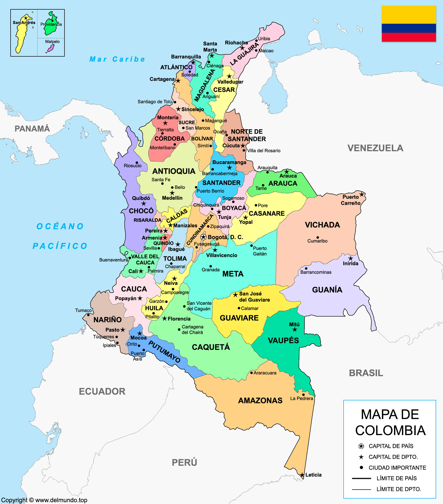

Panorama actual de Colombia y sus principales ciudades

Colombia atraviesa un proceso continuo de transformación en ámbitos económicos, sociales y tecnológicos. Las principales ciudades del país se consolidan como motores de desarrollo, impulsando proyectos de infraestructura, innovación y sostenibilidad. Este blog presenta un análisis general y noticias relevantes de Colombia, con énfasis en Barranquilla, Bogotá, Medellín y Cali, destacando sus avances, retos y oportunidades.
Colombia enfrenta retos y avances en 2026
Colombia continúa siendo una de las economías más importantes de América Latina, con avances en sectores como el comercio, la tecnología, la educación y el turismo. Sin embargo, el país también enfrenta importantes desafíos que afectan su desarrollo y estabilidad. En el ámbito económico, se ha evidenciado una recuperación progresiva después de periodos de desaceleración, impulsada por el crecimiento del comercio interno y la inversión en infraestructura. Sectores como la construcción, el transporte y los servicios han mostrado una tendencia positiva, generando empleo y fortaleciendo la economía nacional. En materia social, el país continúa trabajando en la reducción de la pobreza y la desigualdad, implementando programas de apoyo a comunidades vulnerables. No obstante, aún persisten dificultades en el acceso a servicios de salud, educación y empleo en algunas regiones. Por otro lado, la seguridad sigue siendo un tema clave, ya que la presencia de grupos armados y organizaciones criminales en algunas zonas del país genera preocupación en la población. Esto ha llevado al fortalecimiento de estrategias gubernamentales para garantizar la seguridad y el orden público. A pesar de estos desafíos, Colombia mantiene un crecimiento constante, apoyado por sus principales ciudades, que actúan como motores económicos y centros de innovación.